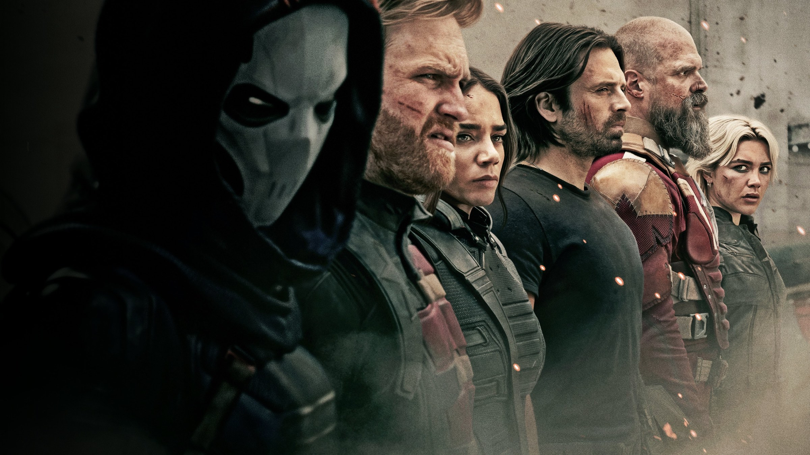
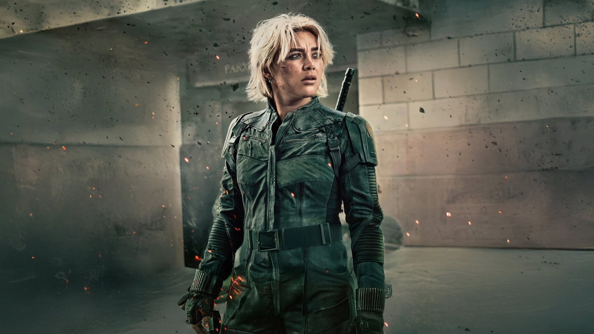
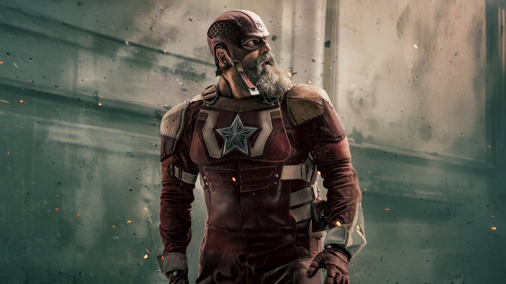

Thunderbolts*
Cinque scartati della Marvel, un uomo che non ricorda chi è e una squadra che dà il meglio quando smette di combattere
Thunderbolts* funziona quando i suoi eroi smettono di combattere e traballa quando deve tornare a essere un prodotto Marvel: il film migliore sta nelle stanze, non sullo sfondo di New York. Jake Schreier mette insieme una squadra di scartati e una domanda che il genere di solito rimanda, cioè che cosa resta di una persona quando nessuno viene a salvarla. La risposta è la parte più riuscita del film, ma la chiusura la sacrifica in parte alla logica del marchio.
La scena che vale il film
In una struttura segreta dell'O.X.E. Group, Valentina Allegra de Fontaine ha mandato quattro agenti scomodi, tra cui Yelena e John Walker, con un ordine preciso: uccidersi a vicenda. Lo scontro è breve perché Ava elimina Antonia, cioè Taskmaster. Chi resta capisce di essere finito in una trappola. In quel momento una capsula si apre e ne esce Bob, un uomo smarrito che non sa dove si trova. Basta toccarlo perché Yelena e Walker rivivano per un attimo i loro ricordi peggiori.
Il film non commenta quei ricordi, li mostra come un fatto, e da quel contatto capiamo che il nemico non avrà un costume ma una ferita. È anche la scena che ci fa credere alla squadra, perché due professionisti dell'omicidio vedono il peggio di sé davanti a un estraneo, e da lì in poi collaborano per scappare.
Una squadra nata da un tradimento
La Suicide Squad della DC nasce da un ricatto, mentre i Thunderbolts nascono da un tradimento, e la differenza si sente: i personaggi non si odiano per contratto, si diffidano perché qualcuno ha deciso che valevano meno delle prove da bruciare. Yelena, che avevamo conosciuto in Black Widow, è la sintesi migliore di questa idea. Florence Pugh la gioca vuota e ironica, incapace di credere che qualcosa possa interessarle, ma sempre a un passo dal ridere di se stessa. Pugh stessa ha raccontato che la squadra «teneva probabilmente in vita» Yelena, e si capisce quando il gruppo trova un nome: è John Walker a chiamarlo Thunderbolts, ispirandosi alla squadra di calcio in cui Yelena giocava da bambina. Un dettaglio piccolo, ma dice che il passato di lei non è solo dolore. Accanto a loro c'è Alexei, il Red Guardian di David Harbour, figura paterna di Yelena: mentre lavora come autista sente il piano di Valentina e arriva a salvarli.

Il nome di Bob e il corpo di Yelena
L'attrice ha voluto girare di persona il salto dal Merdeka 118 di Kuala Lumpur, e il film lo ricompensa con un personaggio fisico, concreto, mai levigato. Ma il vero colpo è Lewis Pullman. Aveva già interpretato Robert Floyd, detto Bob, in Top Gun: Maverick, e per evitare l'effetto replica aveva chiesto a Schreier di chiamare il personaggio semplicemente Robert. Il regista ha spiegato che il nome conta nel fumetto e Pullman, alla fine, si è convinto. Il risultato è un Bob che ispira tenerezza e inquietudine insieme, perché Pullman non lo recita mai da minaccia fin dall'inizio.
La cameretta nel buio
Quando il Void inghiotte New York, la città si riempie di oscurità e le persone restano intrappolate nei loro ricordi peggiori. È l'idea migliore del film, perché la depressione di Bob smette di essere una metafora e diventa uno spazio che si attraversa. Schreier ha detto che i poteri del Void sono ispirati alle ombre rimaste dopo il bombardamento di Hiroshima, un'immagine che spiega bene perché quell'oscurità sembra una presenza e non uno sfondo.
Nel punto più forte Yelena entra nel buio e trova Bob in una ricostruzione della sua cameretta d'infanzia, la stanza in cui si nascondeva da un padre violento. Il film sceglie di fermarsi lì, in un luogo piccolo e domestico, e per una volta un racconto di supereroi mette un gesto di attenzione davanti a un colpo.

Dove inciampa
Il difetto sta nelle persone che il film non sa dove mettere. Taskmaster esce di scena al primo scontro, Ava, cioè Ghost, resta una presenza di servizio e Bucky, che pure è diventato deputato, serve soprattutto a portare la squadra a New York. È un problema perché la forza del film è il gruppo, e un gruppo senza voci diverse somiglia a un'ottima scena a due che si allarga a forza.
Il secondo limite è la chiusura. La crisi si scioglie nel modo giusto, con la squadra che entra nel buio e abbraccia Bob invece di colpirlo, ma subito dopo il film rientra nella logica del marchio: Valentina organizza una conferenza stampa, presenta il gruppo come i nuovi Avengers e si prende il merito. Yelena le risponde sottovoce e la battuta funziona, però il passaggio da una stanza buia a una platea di giornalisti è brusco, perché toglie al finale l'intimità che aveva appena costruito. La scena dopo i titoli, con un'astronave segnata da un grande «4», guarda già al film successivo e ricorda che questo è anche un anello di una catena.
Cosa ne pensa chi l'ha visto prima di noi
La critica italiana si è spaccata. Rebecca Fulgosi su Framed gli ha dato 8 e lo ha definito «un film che fa il suo dovere, senza troppe pretese»; William Maga, su Il Cineocchio, gli ha dato 5 su 10 e ci ha visto «il sintomo evidente» di un universo stanco, con Walker ridotto a una macchietta rabbiosa. Noi stiamo più vicini a Fulgosi per i momenti, ma diamo ragione a Maga sui comprimari, perché il film li presenta e poi li dimentica.
I numeri e dove vederlo
A novembre 2026 Rotten Tomatoes dà al film l'88% della critica su 385 recensioni e il 93% del pubblico. Al botteghino ha incassato 382,4 milioni di dollari nel mondo a fronte di un budget di 180 milioni, un risultato che per Marvel Studios è stato una delusione. Il film è uscito in download digitale il 1° luglio 2025, in home video il 29 luglio 2025 e su Disney+ dal 27 agosto 2025. A novembre 2026 in Italia si guarda in abbonamento su Disney+; a noleggio costa 3,99 euro su Rakuten TV e Amazon Video, 4,99 su Timvision e 5,99 su Apple TV.
Per chi è
Lo consigliamo a chi si è perso nei film Marvel degli ultimi anni e cerca un titolo da vedere a sé, perché la storia si capisce anche senza il resto. Piace a chi ha amato Black Widow e vuole ritrovare Yelena, ma anche a chi guarda il genere per i personaggi più che per le battaglie. Lo sconsigliamo a chi vuole un grande spettacolo di effetti, perché qui il momento migliore è una stanza buia.
Thunderbolts* trova il suo cuore in una stanza buia, tra un uomo che ha paura e una squadra che decide di restare, e lo perde solo quando torna a essere il prossimo capitolo del marchio.
Domande frequenti
Cosa significa l'asterisco nel titolo Thunderbolts*?
L'asterisco si spiega alla fine del film, quando la squadra cambia nome; dopo il primo weekend Marvel ha esplicitato il significato nei materiali ufficiali, senza cambiare il titolo.
Florence Pugh ha girato davvero il salto dal grattacielo?
Sì: l'attrice ha eseguito di persona il salto dal Merdeka 118 di Kuala Lumpur, dopo aver insistito con Marvel Studios.
Dove vedere Thunderbolts* in streaming?
In abbonamento su Disney+; a noleggio, a novembre 2026, su Rakuten TV e Amazon Video a 3,99 euro, su Timvision a 4,99 e su Apple TV a 5,99.